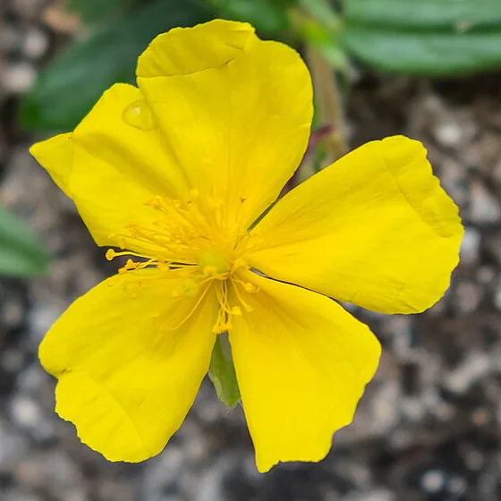
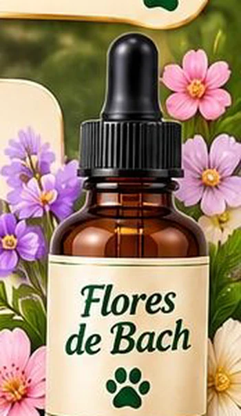
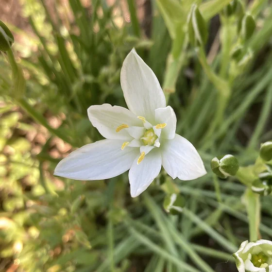

Rock Rose
Para el pánico.
¿Tu mascota la pasa mal con los cohetes?
Ya se acercan la Quema del Diablo, Nochebuena y Año Nuevo. Para muchos perros y gatos esas noches son de temblar, esconderse debajo de la cama o buscar por dónde escaparse.
En Veterinaria Alervet ya tenemos disponibles fórmulas de flores de Bach preparadas para esta temporada.

Son esencias líquidas que se elaboran con flores silvestres. Las desarrolló el médico inglés Edward Bach en la década de 1930. Se dan en gotas, directo en la boca o en el agua de bebida, y casi ninguna mascota las rechaza.
Cada flor corresponde a un estado emocional. Para el miedo a la pirotecnia combinamos varias, por ejemplo:

Para el pánico.
Para el miedo a algo concreto, como el ruido.

Para el impacto de los sustos.
No sedan al animal y se pueden dar junto con otros tratamientos. Acompañan el manejo del miedo; no sustituyen una consulta ni los medicamentos que tu mascota necesite.
Fotografías de las flores: Tournasol7 (CC BY 4.0), Servicio de Parques Nacionales de EE. UU. / Diane Renkin (dominio público) y Eden Aviv (CC0), vía Wikimedia Commons.
Conviene empezar una o dos semanas antes del 7 de diciembre y seguir hasta pasado el 1 de enero.
Un lugar donde tu mascota pueda refugiarse: su cama, una cueva de cobijas, el cuarto más alejado de la calle.
Bajan el ruido y tapan los destellos, que asustan tanto como el estruendo.
Un sonido constante y conocido ayuda a tapar los cohetes y a que el silencio entre explosión y explosión no se sienta tan tenso.
Por si acaso. La mayoría de mascotas que se pierden en diciembre se escapan huyendo de un cohete.
Para perros y gatos que con los cohetes:
También para cachorros y animales recién adoptados que pasan su primera temporada de cohetes, y para mascotas mayores que se ponen más nerviosas con los años.
Si tu mascota llega a lastimarse por el pánico, o el miedo no se le pasa en horas, agenda una consulta antes de las fechas fuertes: puede necesitar otro tipo de tratamiento.
Para el momento del susto
Es una mezcla de cinco flores de Bach pensada para el momento del susto. Se da cuando empiezan los cohetes y tu mascota entra en pánico, y se puede repetir mientras dure la crisis.
Es un buen complemento de la fórmula diaria: una acompaña toda la temporada y la otra se usa en las noches más fuertes. Al entregártela te explicamos cómo darla.
Flores de Bach para pirotecniaQ75
La fórmula diaria. Se empieza una o dos semanas antes y se sigue hasta pasado el 1 de enero.
Terapia de RescateQ75
Para el momento del susto. Se repite mientras dure la crisis.
Pirotecnia + RescateQ100
La cobertura completa: la de todos los días y la de las noches más fuertes. Ahorras Q50.
Llena estos datos y se abrirá WhatsApp con tu pedido ya escrito. Nosotros te confirmamos disponibilidad, el total y cómo lo recibes.
Escríbenos y te ayudamos a escoger entre la fórmula de temporada, la Terapia de Rescate o las dos.